This lab builds a small hub-and-spoke network: VNET-HUB with a VPN gateway, peered to VNET-SP1 and VNET-SP2. It then adds point-to-site (P2S) VPN with certificate authentication so a Windows laptop can join the network privately. Every step is a screenshot from the real build, including the errors along the way: the first ping to a spoke VM timed out, and section 6 shows how to diagnose and fix it.
In a hub-and-spoke design, shared services such as VPN gateways, firewalls and Bastion live once in a central hub VNet. Each workload gets its own spoke VNet, peered to the hub. Spokes stay isolated from each other, but all of them can use the hub's services. This saves money because you pay for one gateway, not one per workload, and it keeps security rules in one place.
An Azure VPN gateway (resource type virtual network gateway, gateway type VPN) is a pair of managed VMs that Azure runs in a special subnet of your VNet. It terminates encrypted tunnels over the public internet. One gateway can serve three kinds of connection:
| Connection | Connects | Typical use |
|---|---|---|
| Site-to-site (S2S) | An on-premises VPN device ↔ Azure, over IPsec/IKE | Office or datacenter network to Azure |
| Point-to-site (P2S) | Individual computers ↔ Azure | Admins and remote workers; this lab |
| VNet-to-VNet | Two Azure VPN gateways | Encrypted links between regions (peering is usually simpler) |
GatewaySubnet, with nothing else in it. Microsoft recommends /27 or larger; this lab used a /24. The portal's Subnet purpose → Virtual Network Gateway option fills in the name for you.VpnGw1AZ, are zone-redundant: the gateway instances are spread across availability zones. The Basic SKU is legacy, lacks most P2S options and isn't recommended.Coming from OCI? An Azure VPN gateway does the job of OCI's DRG plus its IPSec connection. A hub VNet with gateway transit is like a DRG hub with spoke VCN attachments. Azure point-to-site has no direct OCI equivalent; in OCI you'd usually run your own VPN server, such as OpenVPN Access Server, from the Marketplace.
Point-to-site lets a single computer dial into the VNet. Three settings define it:
| Setting | Options | Lab choice |
|---|---|---|
| Address pool | A private range that doesn't overlap any VNet or the client's own network. Each connected client gets one address from it. | 192.168.1.0/24 (see section 7, fix 1) |
| Tunnel type | OpenVPN (TLS on 443, works through most firewalls; needs the Azure VPN Client or an OpenVPN client), IKEv2 (native in Windows and macOS), SSTP (Windows only, legacy) | IKEv2 and OpenVPN |
| Authentication | Azure certificate, Microsoft Entra ID (OpenVPN only; supports MFA and Conditional Access), RADIUS | Azure certificate |
With certificate authentication, you upload the public part of a root certificate to the gateway. Any client presenting a child (client) certificate signed by that root, together with its private key, is allowed in. To cut off one device, add its child certificate's thumbprint to the revoked certificates list.
Peering connects two VNets, but it doesn't automatically let a spoke use the hub's VPN gateway. That takes gateway transit, which is two checkboxes on the peering:
allowGatewayTransit).useRemoteGateways).Even with transit, SP1 still can't reach SP2, because peering doesn't pass traffic on to a third VNet. Spoke-to-spoke traffic needs a router in the hub: Azure Firewall or a network virtual appliance, plus route tables in the spokes. Alternatively, peer SP1 and SP2 directly.
Starting point: VNET-SP1 with SUBNET1, nsg1 and VM vnet1srv01, built in the VNet and NSG posts. You also need a Windows 10/11 or Windows Server PC for the certificates and the VPN client.
Create VNET-HUB (12.0.0.0/16, see section 7, fix 2) and VNET-SP2 in Network-RG, West US 3, the same way as VNET-SP1 in the VNet post. Peering also works across regions, but keeping everything in one region keeps the lab simple.
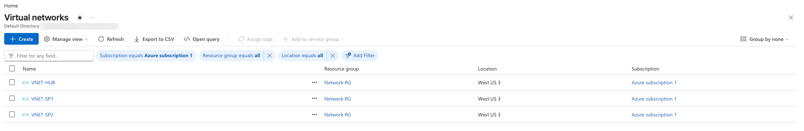
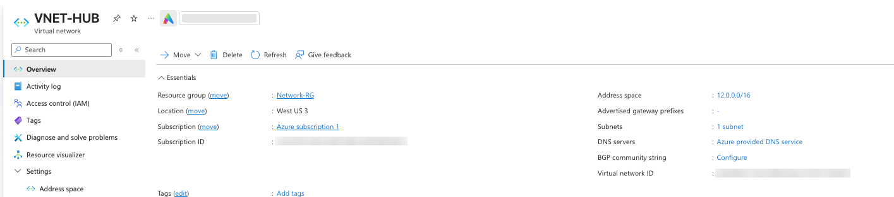
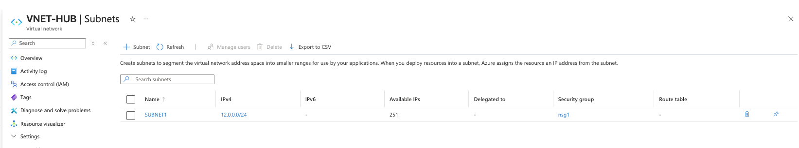
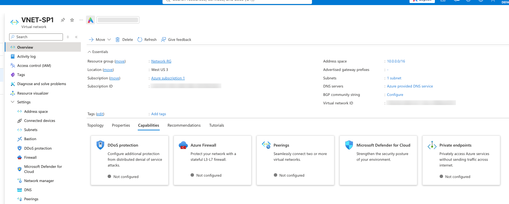
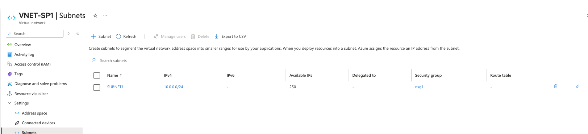
VNET-HUB → Subnets → + Subnet. Set Subnet purpose to Virtual Network Gateway, and the name becomes GatewaySubnet automatically. Use starting address 12.0.1.0, size /24 (a /27 is enough), and leave the NSG and route table at None. Don't attach an NSG to GatewaySubnet; it can break the gateway.
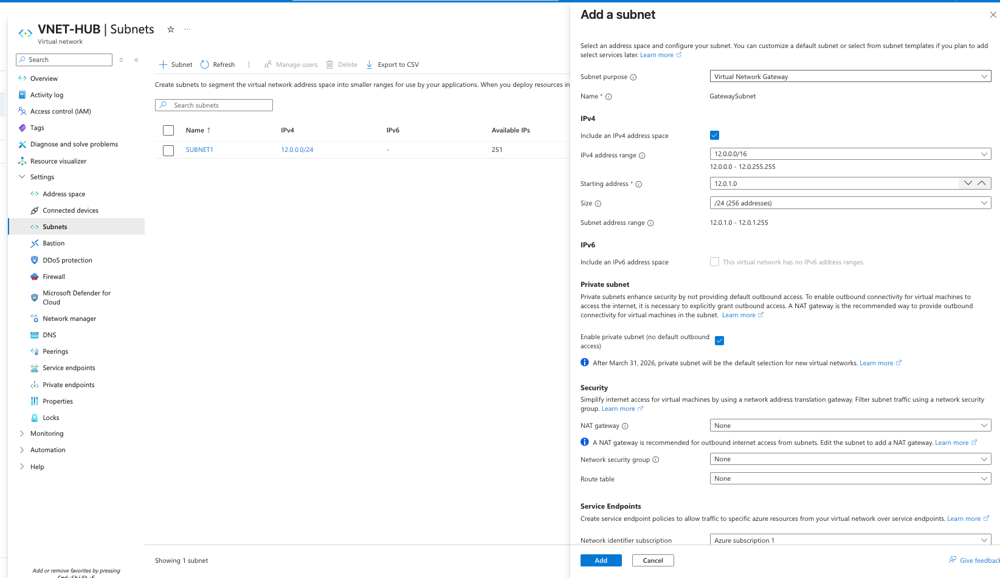
Search VPN gateways → + Create:
vpn-gateway, Region: West US 3VpnGw1AZ, Virtual network: VNET-HUB. The resource group and GatewaySubnet are picked up automatically.vpn-ip (Standard, Static)Then Review + create, and wait 20–45 minutes.
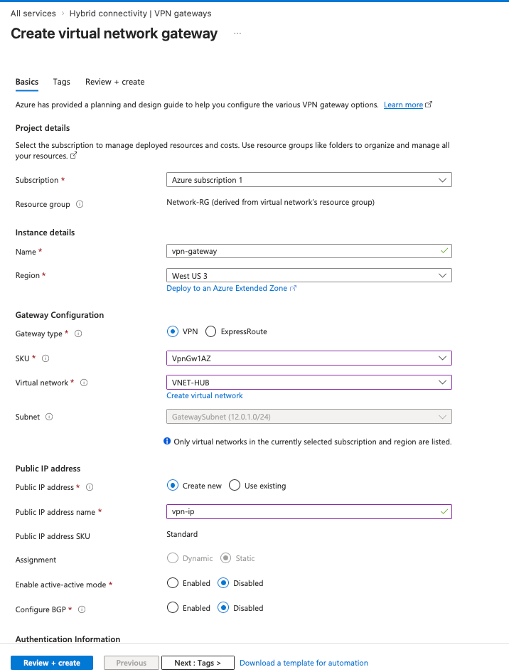
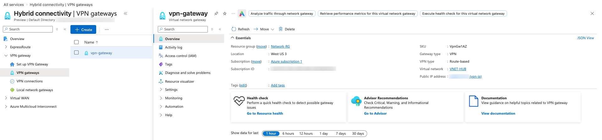
VNET-HUB → Peerings → + Add. One form creates both directions: the "remote" link (from SP1's side) and the "local" link (from the hub's side). The lab names were hub-sp1 for the remote link and SP1-HUB for the local one. Allow access and Allow forwarded traffic are ticked on both sides. The two gateway checkboxes were left unticked here. That's why the first ping to the spoke VM failed, and section 6 walks through the fix. If you're building this fresh, tick them now as described there.
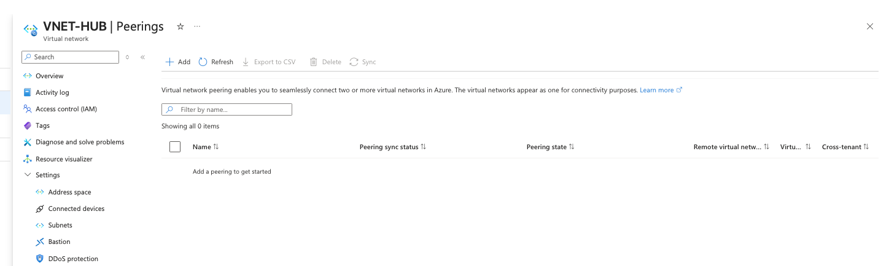
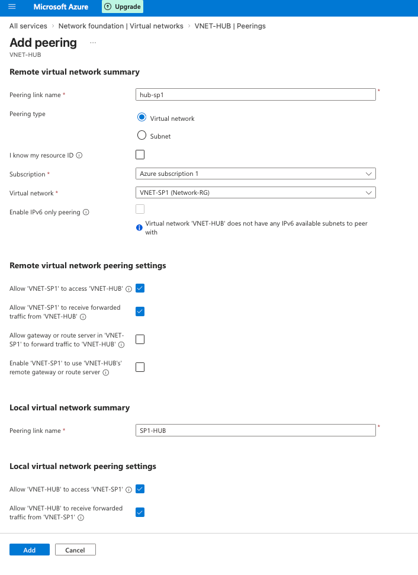
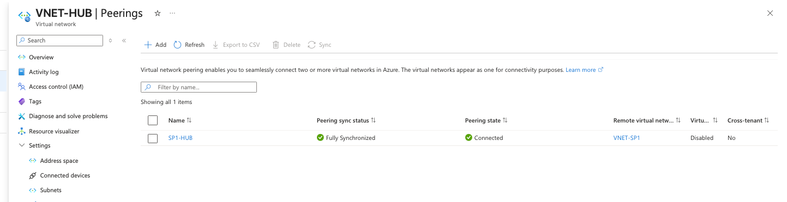
Repeat for VNET-SP2 with the local link name SP2-HUB. The address ranges of all three VNets must not overlap, or Azure rejects the peering.
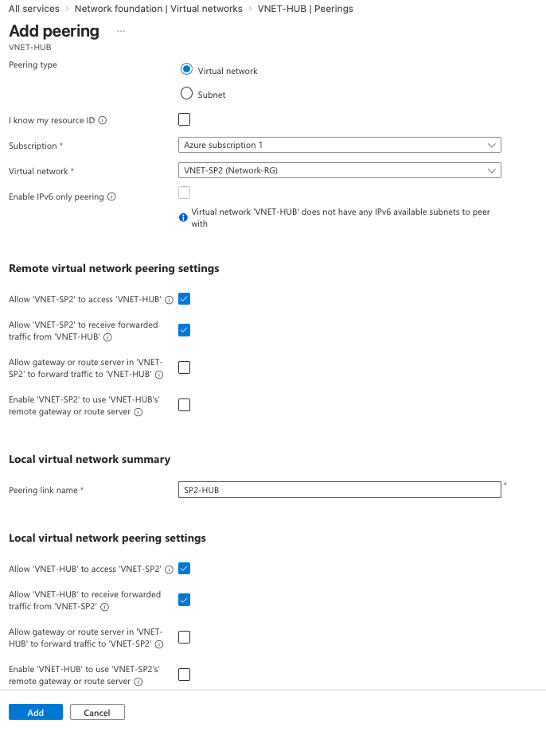
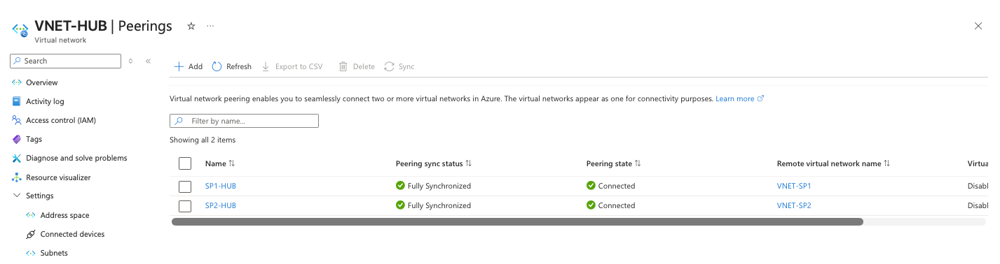
vpn-gateway → Point-to-site configuration → Configure now. Enter the address pool and choose Azure certificate. The page refuses to save: "At least one valid root certificate must be configured if Azure Certificate Authentication type is selected." So, on to the certificates.
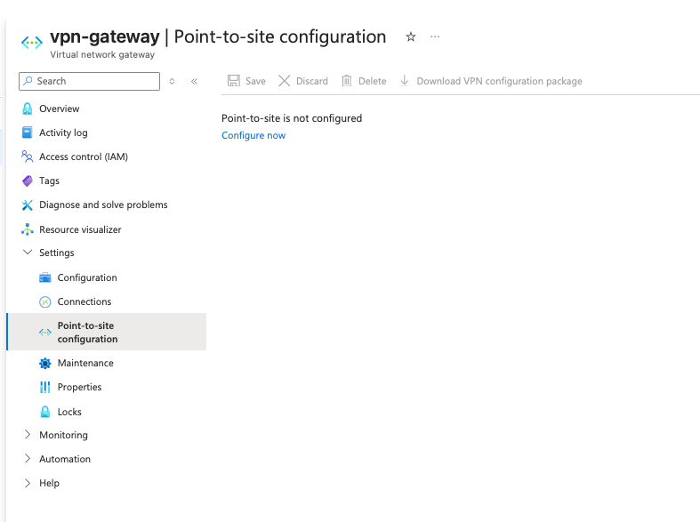
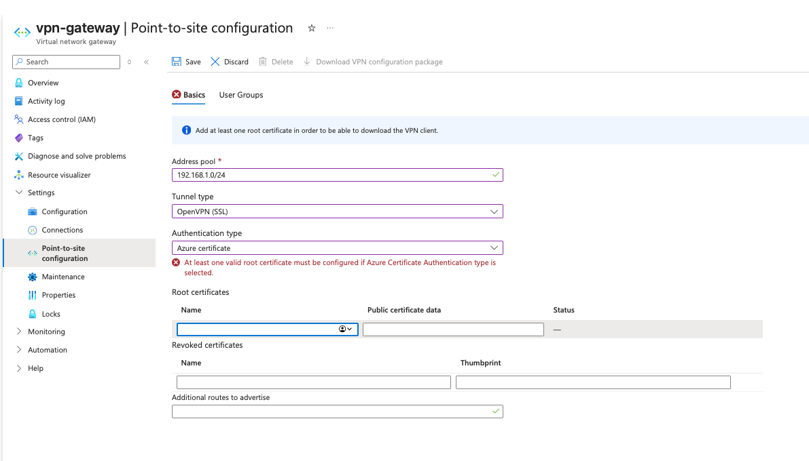
On the Windows PC, open PowerShell as administrator and run the two commands from Microsoft's P2S certificate guide. The first creates a self-signed root that can sign other certificates; the second creates a client certificate signed by it, with the Client Authentication EKU (1.3.6.1.5.5.7.3.2). Both land in Current User → Personal.
# Root certificate
$params = @{
Type = 'Custom'
Subject = 'CN=P2SRootCert'
KeySpec = 'Signature'
KeyExportPolicy = 'Exportable'
KeyUsage = 'CertSign'
KeyUsageProperty = 'Sign'
KeyLength = 2048
HashAlgorithm = 'sha256'
NotAfter = (Get-Date).AddMonths(24)
CertStoreLocation = 'Cert:\CurrentUser\My'
}
$cert = New-SelfSignedCertificate @params
# Client (child) certificate, signed by the root
$params = @{
Type = 'Custom'
Subject = 'CN=P2SChildCert'
DnsName = 'P2SChildCert'
KeySpec = 'Signature'
KeyExportPolicy = 'Exportable'
KeyLength = 2048
HashAlgorithm = 'sha256'
NotAfter = (Get-Date).AddMonths(18)
CertStoreLocation = 'Cert:\CurrentUser\My'
Signer = $cert
TextExtension = @('2.5.29.37={text}1.3.6.1.5.5.7.3.2')
}
New-SelfSignedCertificate @params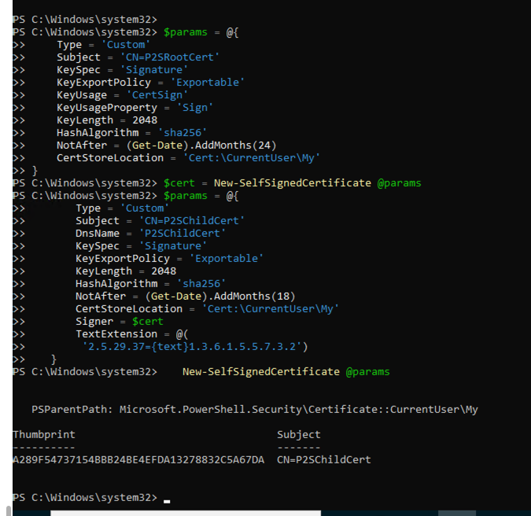
$cert.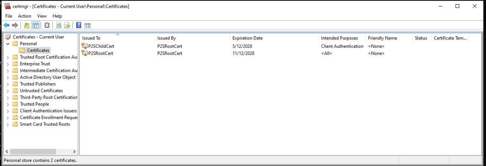
certmgr.msc: child issued by root, expiring 18 and 24 months out.If you closed PowerShell before creating the child certificate, $cert is gone. Look up the root's thumbprint and load it again:
Get-ChildItem -Path "Cert:\CurrentUser\My"
$cert = Get-ChildItem -Path "Cert:\CurrentUser\My\<root-thumbprint>"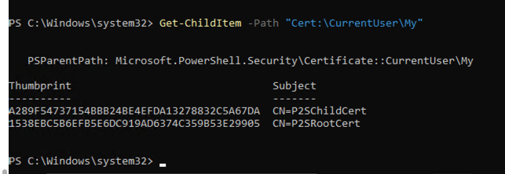
In certmgr.msc, right-click a certificate → All Tasks → Export:
rootcert.cer. This file goes to Azure.childcert.pfx. You only need this to install the client certificate on other computers; keep it private.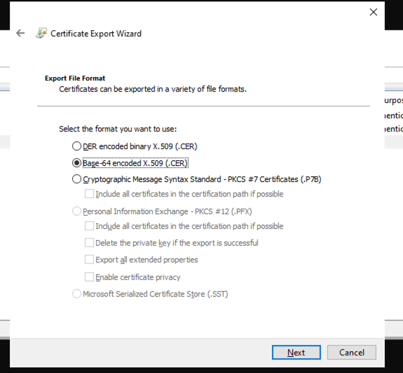
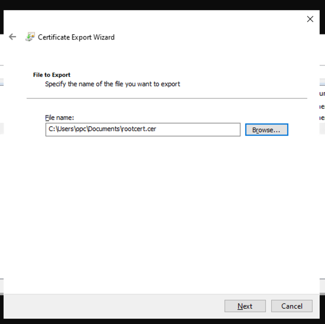
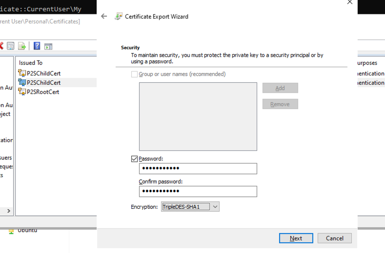
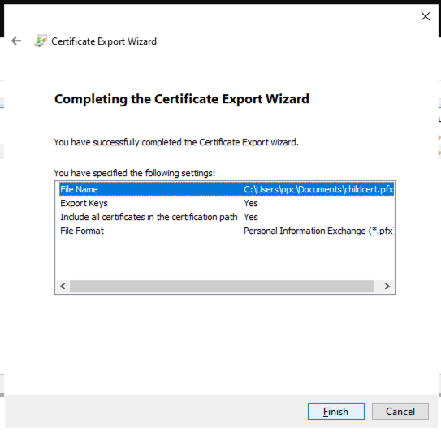
Open rootcert.cer in Notepad and copy the text between -----BEGIN CERTIFICATE----- and -----END CERTIFICATE-----, without those two lines. Back on Point-to-site configuration, add a root certificate (the lab named it azure; P2SRootCert would be clearer), paste the data, set the tunnel type to IKEv2 and OpenVPN (SSL), and click Save. The gateway shows Updating… for a few minutes, and the certificate status changes to Valid.
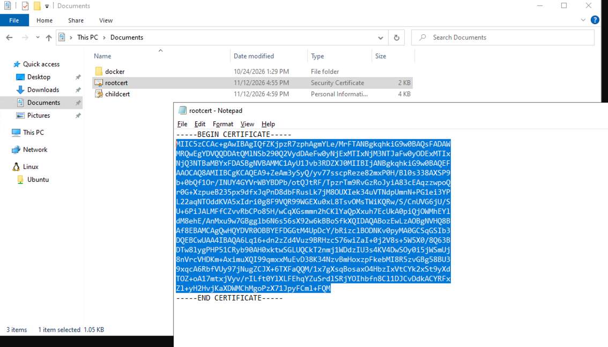
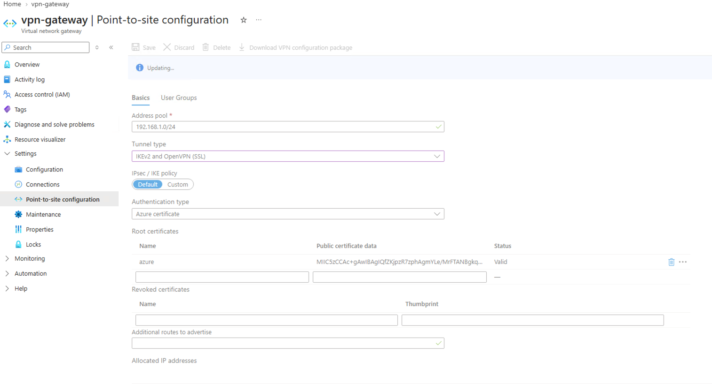
A shortcut that skips the export wizard: in the PowerShell session where $cert is the root, run [Convert]::ToBase64String($cert.RawData) and paste the output.
Click Download VPN configuration package. The zip has a folder per client type. For the native Windows client (IKEv2/SSTP), run WindowsAmd64\VpnClientSetupAmd64.exe. Windows SmartScreen flags it because the package isn't signed with a well-known publisher; it came straight from your own gateway, so More info → Run anyway is fine here. For OpenVPN, import the profile from the AzureVPN or OpenVPN folder into the Azure VPN Client instead.
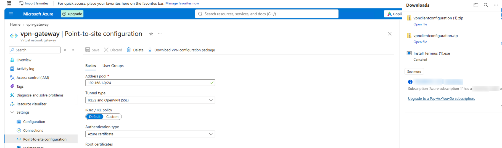
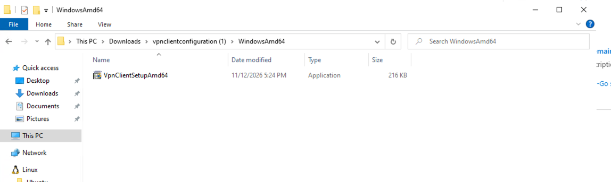
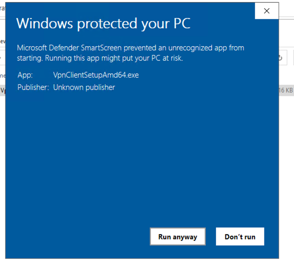
Settings → Network & Internet → VPN now lists VNET-HUB. Click Connect, then Connect in the Azure VPN dialog. Windows asks for elevation for CMROUTE.DLL, which adds the routes for the VNet ranges to your routing table. Click Continue. The status changes to Connected.
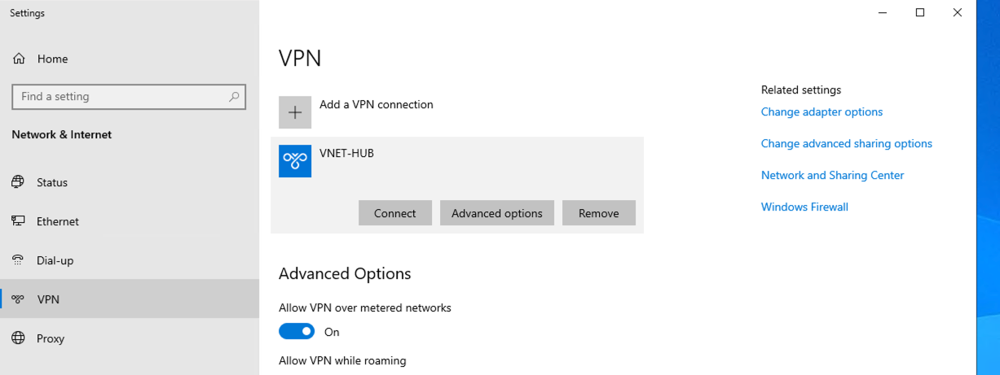
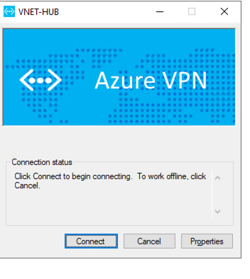
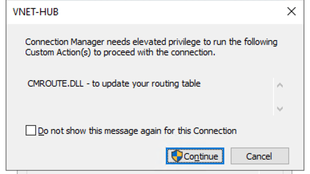
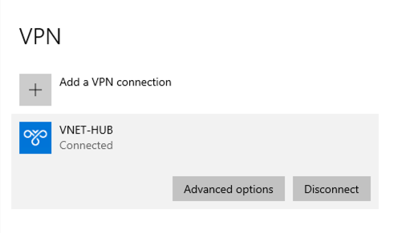
With the VPN connected, the real test is reaching a VM by its private IP. The VM is vnet1srv01 at 10.0.0.4 in VNET-SP1. The first attempt failed:
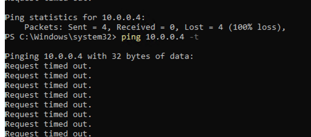
A timeout over a VPN usually means the laptop doesn't send that traffic into the tunnel at all. Check which Azure ranges the VPN client installed:
route print | findstr "10.0.0.0 12.0.0.0"
12.0.0.0 255.255.0.0 On-link 192.168.1.2 43Only the hub's 12.0.0.0/16 was there, reached through the laptop's VPN address 192.168.1.2. There was no route for SP1's 10.0.0.0/16, so pings to 10.0.0.4 went out through the normal internet connection and disappeared.
The gateway only advertises VNets it is allowed to carry traffic for. VNET-SP1 is peered to the hub, but the two gateway transit settings were off (section 4). So the gateway told clients about the hub only, and SP1 had no route back to the VPN address pool either.
Hub side: VNET-HUB → Peerings → SP1-HUB → tick Allow gateway or route server in 'VNET-HUB' to forward traffic to 'VNET-SP1' → Save. Leave Enable 'VNET-HUB' to use 'VNET-SP1's' remote gateway unticked, because SP1 has no gateway.
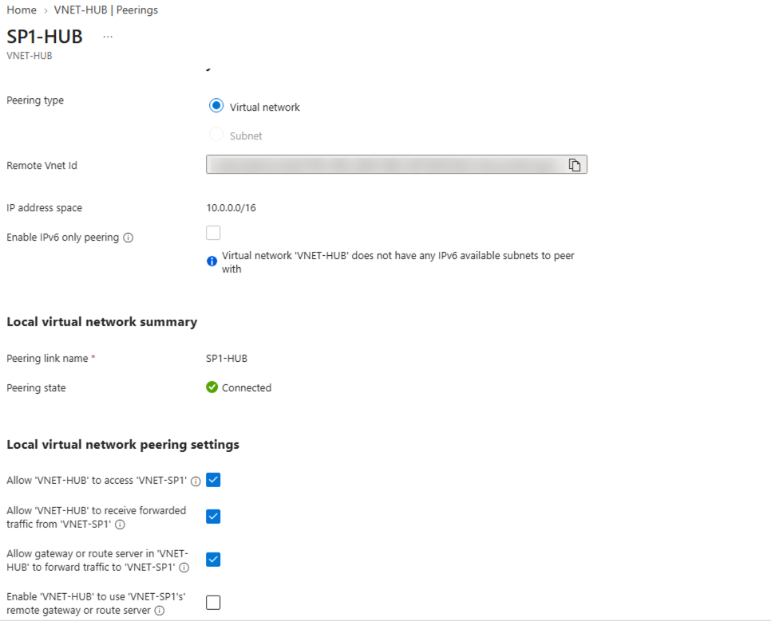
Spoke side: VNET-SP1 → Peerings → the link to the hub (hub-sp1) → tick Enable 'VNET-SP1' to use 'VNET-HUB's' remote gateway or route server → Save. Wait for the peering state to show Connected again. Repeat both sides for VNET-SP2 if you want VPN access there too.
The same in Cloud Shell:
az network vnet peering update -g Network-RG --vnet-name VNET-HUB -n SP1-HUB \
--set allowGatewayTransit=true
# Find the spoke-side peering name, then enable remote gateway use
az network vnet peering list -g Network-RG --vnet-name VNET-SP1 --query "[].name" -o tsv
az network vnet peering update -g Network-RG --vnet-name VNET-SP1 -n hub-sp1 \
--set useRemoteGateways=trueThe Windows client gets its route list when it's installed, so a client installed earlier never learns about SP1. Disconnect, download the VPN configuration package again, run the new WindowsAmd64\VpnClientSetupAmd64.exe, reconnect, and click Continue on the CMROUTE prompt.
route print | findstr "10.0.0.0 12.0.0.0" :: now shows both 12.0.0.0 and 10.0.0.0, on-link via 192.168.1.x
ping 10.0.0.4 :: Reply from 10.0.0.4
ssh nsunke@10.0.0.4 :: SSH over the VPN, no public IP neededThe ping gets replies and SSH to 10.0.0.4 works. In the portal, vpn-gateway → Point-to-site configuration → Allocated IP addresses lists the laptop's VPN address. Since the VM is now reachable privately, you can remove its public IP and the internet-facing ssh rule from the NSG post.
| Check | How | What to look for |
|---|---|---|
| Client route | route print | A line for the spoke's range. If it's missing, transit isn't on or the client wasn't reinstalled. |
| VM route back | VM → Networking → NIC → Effective routes | The P2S pool (192.168.1.0/24) with next hop Virtual network gateway. If it's missing, useRemoteGateways on the spoke peering didn't save. |
| Address overlap | ipconfig | Your Wi-Fi or Ethernet adapter must not be in the P2S pool's range (see fix 1). |
| VM running | Portal → VM overview | Status Running, not Stopped (deallocated). |
| NSG / OS firewall | NIC → Effective security rules; sudo ufw status | The default AllowVnetInBound covers VPN clients; check that no custom Deny rule blocks them. Ubuntu answers ping by default. |
NSGs still apply to VPN traffic. Traffic from the P2S address pool arrives through the gateway and is normally matched by the VirtualNetwork service tag, so nsg1's default AllowVnetInBound rule lets VPN clients in. To restrict them, add rules with the pool as the source.
Gateway transit was the fix that got the ping working (section 6). Two other choices in this lab work, but are worth correcting before you reuse the design.
192.168.1.0/24 is the default LAN range on many home routers. If ipconfig shows your Wi-Fi or Ethernet adapter on 192.168.1.x, the VPN and local routes will conflict. Change the pool to an unused range, such as 172.16.201.0/24, save, then download and install the client package again.
12.0.0.0/16 isn't in the RFC 1918 private ranges; it's real internet address space owned by another company. Azure allows it, but resources in the hub and VPN clients can no longer reach those public addresses. In a real design, use something like 10.100.0.0/16 for the hub. A subnet in use can't be renumbered, so changing it means rebuilding the hub's subnets.
RG=Network-RG; LOC=westus3
# Hub with GatewaySubnet
az network vnet create -g $RG -n VNET-HUB -l $LOC --address-prefixes 10.100.0.0/16 \
--subnet-name SUBNET1 --subnet-prefixes 10.100.0.0/24
az network vnet subnet create -g $RG --vnet-name VNET-HUB -n GatewaySubnet \
--address-prefixes 10.100.1.0/27
# Gateway (runs 20–45 minutes; --no-wait returns immediately)
az network public-ip create -g $RG -n vpn-ip --sku Standard --zone 1 2 3
az network vnet-gateway create -g $RG -n vpn-gateway -l $LOC \
--vnet VNET-HUB --public-ip-addresses vpn-ip \
--gateway-type Vpn --vpn-type RouteBased --sku VpnGw1AZ --no-wait
# Peerings with gateway transit (after the gateway exists)
az network vnet peering create -g $RG -n HUB-to-SP1 --vnet-name VNET-HUB \
--remote-vnet VNET-SP1 --allow-vnet-access --allow-forwarded-traffic --allow-gateway-transit
az network vnet peering create -g $RG -n SP1-to-HUB --vnet-name VNET-SP1 \
--remote-vnet VNET-HUB --allow-vnet-access --allow-forwarded-traffic --use-remote-gateways
# Point-to-site with certificate auth
az network vnet-gateway update -g $RG -n vpn-gateway \
--address-prefixes 172.16.201.0/24 --client-protocol IkeV2 OpenVPN
az network vnet-gateway root-cert create -g $RG --gateway-name vpn-gateway \
-n P2SRootCert --public-cert-data "$(sed '1d;$d' rootcert.cer | tr -d '\r\n')"
# Client package URL
az network vnet-gateway vpn-client generate -g $RG -n vpn-gateway -o tsvThe VPN gateway is the expensive part of this lab. A VpnGw1AZ gateway and its public IP are billed every hour they exist, whether or not anyone is connected, and on a free account that uses up credit quickly. VNets, subnets, peerings (apart from data transfer) and NSGs cost little or nothing. Delete the gateway as soon as you finish testing.
# Remove the gateway and its IP, keeping the VNets
az network vnet-gateway delete -g Network-RG -n vpn-gateway
az network public-ip delete -g Network-RG -n vpn-ip
# Or remove the whole lab
az group delete -n Network-RG --yes --no-waitOn the PC, remove the VNET-HUB VPN profile, and delete the certificates from certmgr.msc if you don't need them again. Keep childcert.pfx somewhere safe or delete it; anyone with it and its password could connect while the gateway exists.
Pick an answer to see whether it's right and why.
route print, and reinstall the client after changing peerings.Next in the series: switching P2S to Microsoft Entra ID authentication with MFA, and adding Azure Firewall to route spoke-to-spoke traffic.